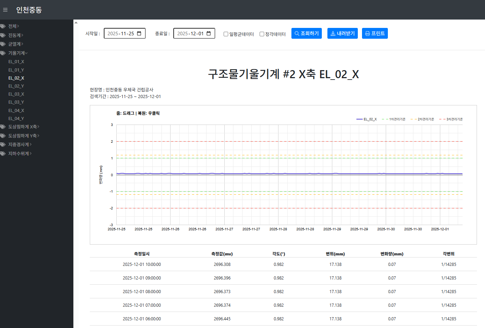
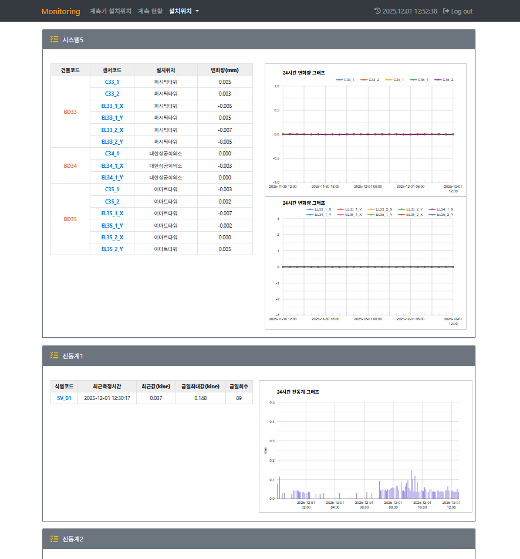
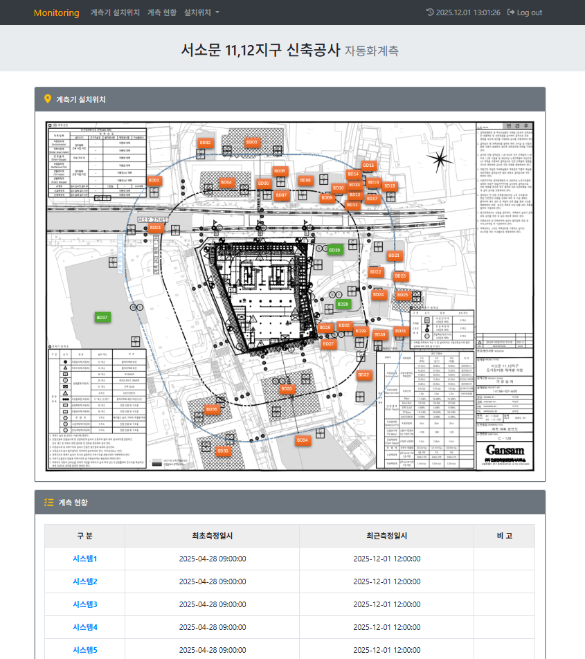
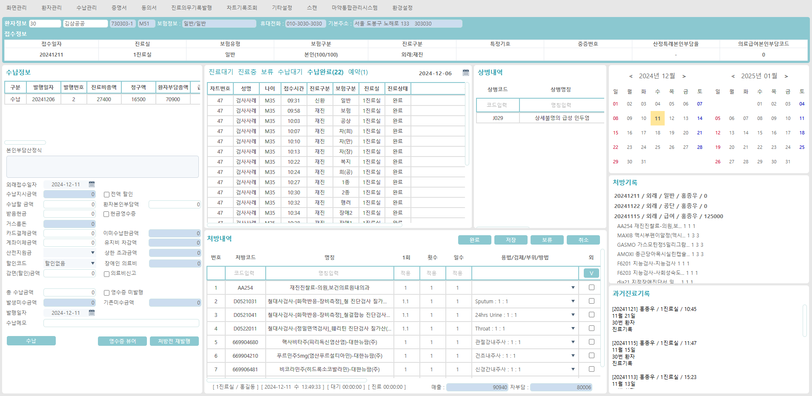
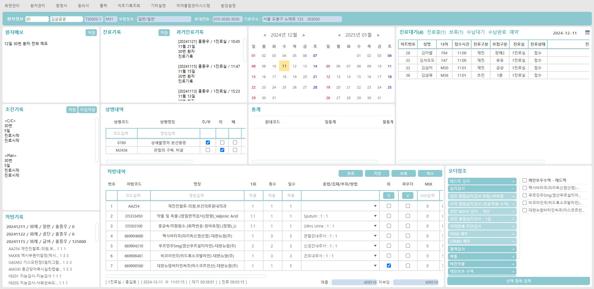
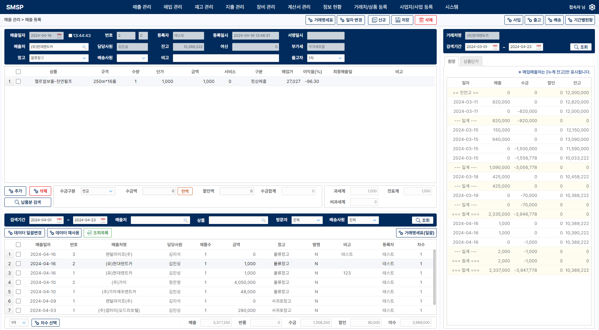
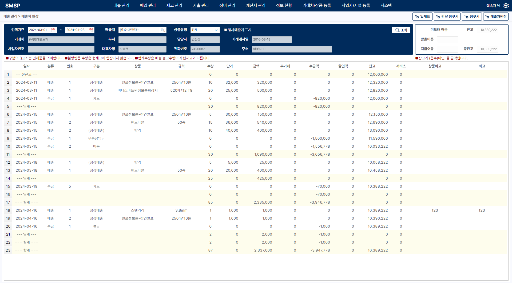
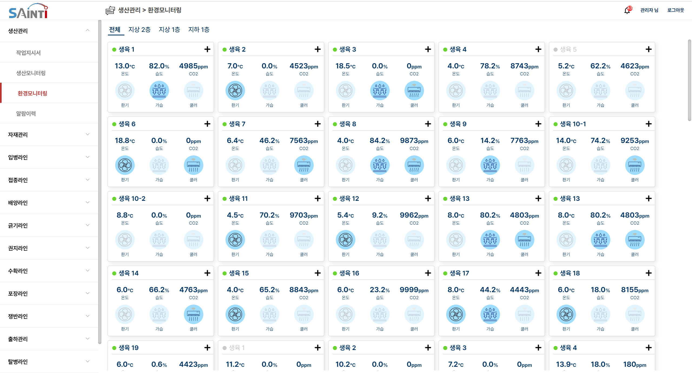
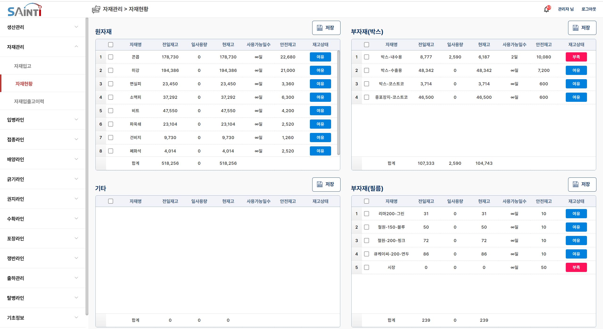

인증서 발급·정산부터 IoT 계측·ERP까지
업무 규칙이 복잡한 시스템을 만듭니다
외주·프리랜서 프로젝트 수행 방식
업무 규칙을 먼저 이해하고 코드로 옮깁니다
제조·물류 현장에서 16년간 생산 공정·배합비·자재 흐름을 직접 다뤘고, 그중 11년은 생산관리부에서 관리·기술 업무를 맡았습니다. 요건을 문장 그대로 받는 대신 업무 흐름과 예외 상황을 먼저 확인하고, 상태 전이·권한·데이터 정합성이 얽힌 로직을 설계합니다.
확정한 요건만 구현하고, 검증한 것만 넘깁니다
요건을 먼저 문서로 확정한 뒤 구현에 들어가고, 진행 상황은 정기적으로 공유합니다. 결과물은 실제 화면과 API 응답으로 직접 확인한 뒤에만 전달하며, 구현과 운영 책임은 전적으로 제가 집니다. 분석·구현에는 AI 코딩 도구를 함께 쓰지만, 검증하지 않은 산출물을 그대로 넘기지 않습니다.
지금 가능한 형태
프로젝트 단위 단기 프리랜서로 참여합니다(현재 유서트 프로젝트와 동일한 형태). 상주 근무를 기본으로 하며 원격·혼합은 프로젝트 여건에 따라 협의합니다. 현 프로젝트가 2026.10초 종료 예정이라 그 시점부터 신규 착수가 가능합니다.
Competencies & Skills
상태 전이·권한 분기 설계 (B2B 플랫폼)
SSL/TLS 인증서 발급·갱신·정산처럼 진행 단계와 권한에 따라 처리 흐름이 달라지는 업무를 Spring Boot 멀티모듈 구조로 구현합니다. 외부 인증기관 연동 상태와 내부 주문 상태를 분리해 판정 기준을 한 곳에 두고, 여러 화면에 걸쳐 어긋나던 값은 서비스·SQL 계층까지 추적해 기준을 일치시킵니다.
인수인계 없는 시스템 파악·복원
외주는 대개 남이 만든 것을 이어받는 일입니다. 설계 명세도 인수인계도 없는 상태를 여러 번 겪었습니다 — EMR은 원본 C# 로직과 대조해 동작하지 않던 코드를 복구했고, ERP는 원본 소스가 없어 실행 프로그램을 직접 조작해 보며 업무 규칙을 되살렸습니다. 문서가 없다는 전제로 접근합니다.
현업 도메인 시너지 (제조·물류/B2B)
제조 현장 생산과 물류센터 입출고를 직접 수행하고, 생산관리부에서 11년간 생산·관리·기술 업무를 맡았습니다. 그래서 현업이 쓰는 용어와 공정 순서를 통역 없이 이해하고, 설비 엔지니어·현장 담당자와 바로 이야기가 됩니다. 요건을 문장으로만 받지 않고 실제 사용자가 그 화면에서 무엇을 하는지를 기준으로 로직을 설계합니다.
데이터 아키텍처 및 쿼리 최적화
비정규화된 대용량 센서·계측 데이터베이스를 정규화된 관계형 모델로 재설계하여 데이터 정합성을 확보합니다. 복합 인덱스(Composite Index) 및 실행 계획 분석을 통해 대용량 수치 조회 쿼리의 응답 시간을 크게 단축합니다.
분산 수집 및 인프라 현대화
현장 계측 PC와 LTE 로거에 흩어져 있는 원천 데이터를 Node-RED 기반 ETL 파이프라인으로 수집·파싱해 수집 API로 넘기는 구조를 구축했습니다. 설비에서 넘어오는 16진수 raw 데이터를 프로토콜 규칙에 따라 변환하고, 중복·예외 상황에서도 적재가 끊기지 않도록 처리합니다. Nginx 멀티테넌시로 현장별 개별 배포 구조를 단일 패키지로 통합했습니다.
레거시 현대화 및 웹 마이그레이션
C# 데스크톱 프로그램과 구조가 복잡한 JSP 레거시를 Spring Boot·Node.js 등 표준 웹 아키텍처로 전환합니다. 특정 PC 환경에 묶여 있던 클라이언트를 브라우저에서 동작하는 웹으로 이관하고, 현장별로 따로 배포하던 구조는 Nginx 멀티테넌시 단일 패키지로 통합했습니다. 전환 후에는 기존 시스템의 결과와 값을 대조해 정합성을 확인한 뒤 넘깁니다.
정밀 정산 및 비즈니스 트랜잭션 설계
의료 수가 수납, 인증서 발급·공급가 정산처럼 원 단위가 정확히 맞아야 하는 트랜잭션을 설계합니다. 부동 소수점 대신 고정 소수점(Decimal) 타입을 적용하고, 이미 확정된 금액은 재계산 대신 원천 값을 그대로 사용해 누적 오차가 생기지 않도록 설계합니다.
서버 보안 및 민감정보 노출 통제
Fail2ban과 방화벽 정책을 연동해 포트 스캔·Brute-Force 등 반복 접근을 로그 패턴 기반으로 탐지·차단하고, 액세스 로그 분석으로 비정상 호출 급증 인시던트에 대응합니다. 계정이 하드코딩돼 있던 레거시를 DB 기반 인증으로 전환하고, 모든 요청에 인터셉터 접근 통제를 직접 구현했으며, API 응답 직렬화 단계에 개인정보 마스킹 계층을 두어 민감 정보 노출 경로를 차단했습니다.
Backend
Java/Spring Boot 및 Node.js 기반 비즈니스 로직 및 API 설계
Database & Storage
대용량 계측 데이터 정규화 설계, 인덱스·조인 튜닝, Redis 세션
Middleware / Infra / Tools
설비 신호 수집, 인프라 보안/장애 대응 및 자동화 툴셋
Frontend
MES·ERP·EMR 및 관리자/파트너 화면의 직관적인 대시보드 구현
Experience & Domain
현장 없이 문서만으로는 놓치기 쉬운 생산 공정 흐름, 설비 운전과 공정 제어, 배합비·자재 구성(BOM)과 로트 이력, 물류 재고 추적을 실제 현업 실무자로서 체득했고, 의료 수가·정밀 수납 계산은 EMR 프로젝트를 통해 익혔습니다. 현장에서 쓰는 언어를 그대로 이해하기 때문에, 요건을 문장으로만 받지 않고 업무 흐름과 예외 상황까지 확인한 뒤 설계에 반영합니다.
IT 개발 실무 이력
2023.08~현재SSL/TLS 인증서 파트너 포털 구축 및 백엔드 개선 진행 중
㈜이브레인소프트 (고객사: ㈜한국기업보안 / 유서트)
Java 17·Spring Boot 3.2 멀티모듈 백엔드와 Next.js(TypeScript) 파트너 포털을 함께 담당하는 풀스택 개발.
• 파트너 포털 신규 화면 개발: 기존 관리자 화면의 인증서 발급·갱신·재발급·정산 업무 흐름을 파트너 권한 체계와 사용 시나리오에 맞게 재구성해 Next.js·TypeScript로 구현.
• 담당 범위 확장: 계약 범위인 파트너 영역 외에 관리자(어드민) 기능 개발까지 함께 지원하며 프로젝트 전반의 요청을 처리.
• 상태 전이·권한 분기 구현: 인증서 발급 단계와 외부 인증기관 연동 진행 상태에 따라 기능 노출과 처리 흐름이 달라지는 로직을 Spring Boot 멀티모듈 구조에 맞춰 개발.
• 데이터 정합성 개선: 여러 화면에 걸쳐 금액·귀속 범위가 어긋나던 문제를 SQL과 서비스 계층까지 추적해 판정 기준을 단일화하고 전 구간에 일괄 반영.
• 다수 이슈 병행 처리 체계: Git worktree로 이슈별 작업을 격리해 여러 건을 동시에 진행하고 Jenkins로 개발·스테이지 환경에 배포. 요건 분석·구현·교차 검토에는 AI 코딩 도구(Claude Code·Codex·Grok)를 함께 활용.
대학 통합 CMS 기술지원 및 요건별 기능 커스터마이징
㈜앤드와이즈
Spring MVC(Controller·Service·Mapper)·MyBatis·JSP·Maven 기반 대형 CMS 솔루션의 기술지원과 요건별 기능 커스터마이징, 인프라 관리.
• 서버 부하 인시던트 탐지·대응: 특정 게시판 대상 대용량 첨부파일 반복 다운로드로 서버 CPU 부하가 급증한 장애를 액세스 로그 분석으로 원인 규명하고 대응. 디스크 용량 관리를 위한 서버 로그 로테이션(Log Rotation) 셋업.
• 예약 기능 요건 대응: 솔루션에 구현돼 있던 강의실·시설물 예약 기능을 해당 학교 요건에 맞게 조정. 예약 라이프사이클과 예약 불가 기간 제어가 요건대로 동작하도록 수정하고, 타 대학의 유사 구현을 참고해 오류를 정정.
• SSO 연동 및 맞춤 기능 개발: 솔루션 자체 SSO와 학교 전용 SSO 사이의 연결 구간 작업(SSO 자체 구현이 아닌 연동 담당), 게시판 유형별 커스텀 위젯 개발.
• 준공공기관 보안/WA 대응: 대학교 보안 기준에 따른 서버 접근 제어 및 정기 웹 취약점 패치 적용. 웹 접근성(WA)은 외부 진단 결과를 받아 지적 항목을 교정.
• AI 코딩 도구 활용: Claude Code 등 터미널 기반 AI 에이전트를 활용해 대형 CMS 레거시 소스를 분석하고 오류 디버깅 속도를 단축.
국가지정 문화재·건설현장 계측 모니터링 시스템 전면 재구축
㈜다인이엔씨
경주 첨성대·경복궁 근정전·공주 마곡사 대웅보전 등 국가지정 문화재와 도심 건설현장의 구조 안전 계측 시스템. 구조가 얽힌 JSP 레거시와 계정 하드코딩 문제를 확인하고 전면 개편을 직접 제안해 사내 유일 개발자로 전 현장을 담당해 재구축.
• 아키텍처 현대화: 기존 현장별 Tomcat 개별 WAS 배포 방식을 Nginx 리버스 프록시 및 Spring Boot 단일 JAR 기반 멀티테넌시(서브도메인 분기) 구조로 통합 전환.
• DB 정규화 및 정밀 연산: 파이프(|) 구분자 문자열 컬럼을 Decimal 타입으로 재설계 및 3차 정규화 수행, 센서 물리 신호(mV)의 보정 공식 실시간 변환 엔진 구현.
• 수집 파이프라인 자동화: 외주 수집기를 대체하여 3대 PC 내 이기종 벤더 CSV 파일들을 통합 파싱 및 배치 업로드하는 Node-RED 자동화 프로세스 구축.
• 인증·접근 통제 재구축: 계정이 소스에 하드코딩돼 있던 구조를 DB 기반 인증으로 전환하고, 모든 요청이 인터셉터를 거치도록 구성해 화면·기능별 접근 권한을 분기.
• 관제 편의 기능: 관리자 전용 설정 콘솔 구현, 임계값 초과 시 SMS 자동 발송 기능 구축.
• 대용량 쿼리 최적화: 천만 건 단위 계측 데이터 조회 병목 해결을 위한 SQL 조인 튜닝 및 인덱스 설계.
의원급 EMR 웹 마이그레이션 및 빌링 엔진 개발
림팩토리
인수인계와 설계 명세가 없는 상태에서(원본 C# 소스는 확보) C# 데스크톱 레거시 기반 EMR 시스템을 Node.js 웹으로 전환한 풀스택 개발.
• AI 변환 코드 복원: 인계받은 자바스크립트 코드가 AI 자동 변환 산출물이라 실행되지 않는 상태였고, 원본 C# 비즈니스 로직과 대조하며 정상 동작하는 Node.js 코드로 복구.
• 의료 워크플로우 구현: 접수 → 진료 → 수납으로 이어지는 의원급 EMR 핵심 업무 흐름을 파악하고 웹으로 이관.
• 수가 계산 엔진 복구: 환자별 건강보험 적용 여부, 특정 질병코드 매핑 등 복잡한 수가 가산 규칙에 기반한 수납 계산 로직 전면 검증 및 복구.
• 원내 문서 출력 시스템: 원내 처방전, 환자 개인정보 수집/활용 동의서 등 다양한 규격 문서의 실시간 출력 서식 개발.
• 의료 개인정보 보안: API 요청/응답 과정에서 환자 민감 정보 노출 취약점 식별 및 마스킹 데이터 처리(DTO 설계) 적용.
소상공인 통합 ERP 웹 전환 (프론트엔드 전체 담당)
㈜세인티
소상공인 타깃의 C# 데스크톱 ERP를 웹으로 전환하는 프로젝트에서 프론트엔드 전체를 담당.
• SMWP 기반 업무 화면 구축: 세인티가 라이선스를 보유한 로우코드 플랫폼 SMWP(Smart Web Platform, EasyUI·JavaScript 기반)와 자바스크립트를 연동하여, 매출·매입·재고·지출·계산서 등 그리드 데이터 테이블 중심의 복잡한 업무 화면 설계·구현.
• 정산·통계 조회 화면: 일/주/월/분기/상하반기/연 단위 매출 추이 및 정산 집계 조회 화면 구현, 백엔드 집계 API 연동.
• 인쇄·증빙 서식 개발: 영수증, 거래 명세서, 전자 계산서의 실시간 인쇄용 웹 출력 서식 개발.
• 브라우저 호환 확보: 특정 환경에 묶여 있던 데스크톱 클라이언트를 주요 브라우저에서 동작하는 웹으로 이관 (모바일 앱은 별도 담당자 영역).
버섯 스마트팜 MES 구축 (프론트엔드 전체 담당)
㈜세인티
버섯 스마트팜(명덕농산) 대상의 웹 기반 실시간 공정 모니터링 MES 프로젝트에서 프론트엔드 전체를 담당하고, 후반에는 Spring 백엔드를 인수인계받아 유지보수를 수행.
• 설비 신호 기반 공정 이력 적재: 사내 PLC 통신 데몬과 웹 플랫폼(SMWP)이 공유하는 시스템 변수를 활용해, 공정 통과 센서 신호 실시간 감지 시 해당 시점의 계측 센서 로그를 특정 LOT 번호의 공정 이력 데이터로 자동 매핑 및 데이터베이스 저장.
• 배양실 라이프사이클 관리: 물류창고형 배양실(Room) 공간의 유한 상태 기계(State Machine) 모델링 적용, 입고 → 14일 숙성 배양 → 출고 → 청소 필요 → 입고 가능의 순환 프로세스 제어 알고리즘 구현.
• 실시간 환경 관제 및 경보: 이산화탄소, 온습도 센서 계측값 수집 및 한계 임계값 초과 발생 시 에러 로그 자동 적재 및 메인 대시보드 내 실시간 경보 알람 수량 배지 동적 렌더링.
• 권한 등급별 화면 분기: 관리자 권한 등급에 따른 메뉴 노출 분기 처리 및 자재/배양실 환경 마스터 제어 어드민 화면 구현 (권한 체계 설계가 아닌 프론트 분기 담당).
• 백엔드 인수인계: 프로젝트 후반 Spring 백엔드를 이관받아 유지보수와 일부 기능 추가 담당 (PLC 통신 모듈은 사내 보유 툴로 별도 담당자 영역).
현대자동차 프레스 공정 설비 데이터 수집 플로우 개발
㈜세인티
현대오토에버 커스텀 Node-RED 플랫폼에서 현대자동차 프레스 공정 설비 데이터의 파싱·변환·적재 플로우(단일 캔버스 1건) 개발에 참여하고, 먼저 구축돼 있던 다른 공정 라인의 수집 플로우를 함께 유지보수.
• PLC raw 데이터 파싱·변환: 플랫폼이 제공하는 통신 노드를 설정해 Mitsubishi PLC 단말의 16진수 바이트 배열(Byte Array) 데이터를 수신하고, 프로토콜 규칙에 따라 10진수로 변환해 요건에 맞는 DB 레코드로 포맷팅하는 로직 구현 (통신 계층은 플랫폼 기본 기능).
• Tibero 적재 및 후처리 자동화: 프레스 공정 신규 구축분의 대용량 설비 로그를 Tibero에 고속 적재하는 배치(Batch) 인서트 구문을 설계하고, DB Job·프로시저로 적재 후 처리를 자동화. 네트워크·DB 예외 발생 시 수집 누락을 막는 재처리 루프(Retry Loop) 구현.
• 기존 공정 라인 유지보수: 먼저 완료돼 있던 다른 공정의 수집 플로우(MariaDB)를 병행 유지보수하며 중복 적재 방지 처리와 장애 대응 수행.
• Node-RED 수집 경험 축적: 커스텀 노드 제어 방식을 익혔고, 이후 다인이엔씨에서 수집 파이프라인을 직접 구축할 때 그 경험을 활용.
자바 & 빅데이터 분석 기반 웹 개발자 육성과정 (NCS 국비 훈련 800시간) 교육과정
인천직업능력교육원 (NCS 800시간 과정)
NCS 전공교과(480시간) 및 비NCS 실무 과정(320시간) 포함 총 800시간의 정규 교육 과정 수료.
• Java & OOP / Swing: 자바 프로그래밍 언어 활용 및 서버프로그램 구현 학습, Java Swing 데스크톱 UI 설계 기술 습득 (다인이엔씨 로컬 PC 데이터 DB 업로드 툴 설계의 직접적 기술 기틀 마련).
• Database & SQL: RDB 설계(데이터베이스 구현) 및 SQL 최적화 활용 능력 훈련.
• Spring & Cloud Web Project: Spring Framework 기반 웹서비스 개발 및 오픈 API 연동 클라우드 웹 프로젝트 수행 (총 130시간 프로젝트).
• Python Big Data & ML: 파이썬 기반 데이터 수집/저장시스템 개발, 머신러닝 기반 데이터 분석 및 시각화 프로젝트 수행 (총 120시간 프로젝트).
제조·물류 현업 이력
16+ Years정밀 압출 공정 제어 및 로트(Lot) 이력 추적 관리
㈜아이세로미림 · 생산관리부 (생산·관리·기술)화학 마스터배치 고온 압출 공정 및 클린룸 공조 환경 하의 고순도 포장 용기 압출 성형 생산 프로세스 관리. 원자재 구매부터 완제품 판매까지의 자체 생산-영업 공급망 흐름 통제. 제품별 고유 배합비와 자재 구성(BOM) 관리 및 로트(Lot) 이력 추적. 클린룸 항온항습 공조(HVAC), 진공펌프 압력, 냉각 설비(쿨링타워) 등 공장 전반의 유틸리티 설비(FMS) 동작 메커니즘 이해 및 공정 최적화 수행.
다중 온도대 물류센터 입출고 현장 업무 (WMS 단말 사용)
동원LOEX상온·저온·냉동 3대 보관 온도대 구역과 6단 고층 랙 로케이션 구조를 갖춘 대형 거점 물류센터의 입출고 현장 업무를 수행했습니다. PDA 단말로 바코드를 스캔해 로케이션 적재·이동을 등록하고, 채널별 발주에 따른 피킹과 선입선출(FIFO) 동선, 도크 배정·상차 출하까지의 흐름을 현장에서 직접 처리했습니다. 전산 시스템을 사용자 입장에서 처음 접하며, 재고 데이터가 현장의 행위와 어떻게 연결되는지 이해하게 된 계기였습니다.
사출 성형 현장 생산 및 원료·금형 교체 작업
성환산업 · 현장 생산ABS 레진 사출 제조 공정 전주기(사출 → 사상 → QC → 포장 → 출고)의 현장 생산 업무를 수행했습니다. 사출 부산물과 불량 잔재물의 재가공(분쇄) 희석 비율을 배합 기준에 맞춰 투입하고, 원료 교체 시 이염 방지를 위한 호퍼/분쇄기 라인 클리어링(Line Clearing)과 폐기 원료(Scrap) 처리를 담당했습니다. 제품 규격 변경 시 금형 분리 및 냉각 배관 탈부착 등 Changeover 작업 수행.
Projects
SSL/TLS 인증서 파트너 포털 구축 및 백엔드 개선
고객사 ㈜한국기업보안 (유서트)Java 17 · Spring Boot 3.2(멀티모듈) · MyBatis · Redis(세션) · MySQL
Next.js · React · TypeScript · Jenkins CI/CD · Git/GitLab · Jira
파트너 포털 신규 화면 개발과 백엔드 기능 개선·버그 수정. 인증서 발급·갱신·정산의 상태 전이와 권한 분기를 파트너 시나리오에 맞게 구현.
파트너 영역과 함께 관리자(어드민) 기능 개발도 담당
이슈별 Git worktree 격리로 여러 건 병행 처리. 요건 분석·구현·리뷰 전 과정에 AI 코딩 도구를 활용하고, 실화면·API 응답으로 검증한 뒤 반영
회사명·역할·기술·일반화된 업무 설명만 공개. 화면·소스코드·내부데이터는 계약상 비공개
국가지정 문화재·건설현장 IoT 계측 모니터링 플랫폼 재구축
경주 첨성대·경복궁 근정전·공주 마곡사 대웅보전 등 국가지정 문화재와 도심 건설현장의 지반 침하·균열·변위·기울기를 실시간 감시하는 통합 계측 플랫폼입니다. 분산된 현장 계측 PC와 LTE 로거에서 전송되는 데이터를 수집·정규화하고, DB 재설계와 Nginx 멀티테넌시로 현장별 개별 배포 구조를 단일 패키지로 통합했습니다.
- 사내 유일 개발자로 전 현장 담당: 레거시 전면 개편을 직접 제안하고, 요구사항 정의부터 데이터 모델링·WAS 개발·웹 프론트엔드 연동까지 전 과정을 1인 수행.
- Nginx 멀티 테넌시 구현: 단일 WAS 인프라에서 서브도메인 기준으로 현장별 요청을 분리해 운영할 수 있도록 인프라를 통합 구축.
- 임계값 초과 SMS 경보: 계측값이 관리기준(1·2·3차)을 넘으면 담당자에게 SMS를 발송하는 비동기 알림 서비스 구현. 발송 로직을 수집 파이프라인과 분리해 통신사 API 지연이 데이터 적재를 막지 않도록 처리.
- 카카오맵 지점 시각화 (구현 완료 · 운영 미반영): 계측 지점을 지도에 표시하는 기능을 카카오맵 API로 개발했으나, 현장 좌표 데이터를 확보하지 못해 운영 반영은 보류된 상태입니다.
현장 계측 장비 & 계측 PC
물리 계측 센서 데이터 수집 및 로컬 CSV 파일 적재
Node-RED ETL 파이프라인
파일 파싱, 정규화 변환 및 Spring Boot 수집 API 호출
Spring Boot WAS & Nginx
Decimal 타입 연산 처리, Nginx 멀티테넌시 서브도메인 라우팅
MariaDB / Web UI
복합 인덱스 조회 및 실시간 차트 시각화 모니터링



의원급 EMR(전자의무기록) 시스템 웹 전환 및 정밀 수납 구축
기존 C# 기반 데스크톱 EMR 프로그램의 핵심 비즈니스 로직을 분석해 Node.js 웹 API와 프론트엔드로 현대화하고 마이그레이션한 프로젝트입니다.
- AI 변환 코드 복원: 인계받은 자바스크립트가 AI 자동 변환 산출물이라 동작하지 않는 상태였고, 원본 C# 비즈니스 로직과 대조하며 수가·처방 연산 알고리즘을 정상 동작하는 Node.js 코드로 복구.
- 의료 정밀 정산 모듈 구축: 병원별/환자별 복잡한 보험 가산 규칙을 반영한 1원 단위 정합 수납 정산 로직 복원 및 웹 모듈 구현.
- 보안 수준 개선: DTO 보안 마스킹 계층 도입으로 환자 식별 민감 정보의 응답 노출 경로를 차단하고 RBAC 권한 통제 구현.
C# 데스크톱 레거시 EMR
원본 C# 비즈니스 로직 및 DB 스키마 구조 분석
Node.js 백엔드 API
수가 계산 엔진 이식, 소수점/단수 처리 공식 복구
응답 직렬화 마스킹 계층
응답 직렬화 단계에서 주민등록번호·연락처 등 환자 민감정보 자동 마스킹
Node.js & EJS 프론트엔드
환자 접수/진료/수납 원스톱 의료 워크플로우 웹 UI 렌더링


소상공인 통합 ERP 웹 전환 — 프론트엔드 전체 구축
노후화된 C# 데스크톱 ERP를 웹으로 전환하는 프로젝트에서 프론트엔드 전체를 담당했습니다. 세인티가 라이선스를 보유한 로우코드 플랫폼 SMWP(EasyUI·JavaScript 기반)로 업무 화면을 구축하고 백엔드 API와 연동했습니다.
- 업무 화면 전면 웹화: 원본 소스가 없어 기존 실행 프로그램을 사용자 입장에서 직접 조작해 보며 매출·매입·재고·지출·계산서 등 핵심 모듈의 화면 구성과 동작 규칙을 파악하고, 그리드 데이터 테이블 중심의 웹 업무 화면으로 재구성.
- 정산·통계 조회 화면: 일/주/월/분기/상하반기/연 단위 매출 추이와 정산 집계를 조회하는 화면 구현 및 백엔드 집계 API 연동.
- 인쇄·증빙 서식 개발: 영수증, 거래 명세서, 전자 계산서의 실시간 인쇄용 웹 출력 서식 개발.
- 브라우저 호환 확보: 특정 환경에 묶여 있던 데스크톱 클라이언트를 주요 브라우저에서 동작하는 웹으로 이관. 모바일 앱은 별도 담당자의 개발 영역입니다.
기존 C# 데스크톱 ERP Client
C/S 데스크톱 클라이언트 화면을 분석하고 웹 화면으로 대체
SMWP (EasyUI · JavaScript)
그리드 업무 화면과 정산·통계 조회 화면 구현 — 담당 영역
백엔드 REST API (별도 담당)
조회·저장·집계 API 연동. 백엔드 개발은 별도 담당자 영역
인쇄·증빙 출력 서식
영수증·거래명세서·전자계산서 웹 출력 서식 렌더링


버섯 스마트팜 MES 구축 및 설비 데이터 수집 자동화
버섯 배양 스마트팜의 웹 기반 실시간 공정 모니터링 MES 프로젝트에서 프론트엔드 전체를 담당했습니다. 사내 PLC 통신 툴이 공유하는 설비 변수를 SMWP에서 조합해 공정 이력으로 적재하고, 배양실 상태와 환경 경보를 관리하는 화면을 구축했습니다.
- 설비 변수 조합 → 공정 이력 적재: 사내 PLC 통신 툴과 SMWP가 공유하는 시스템 변수를 읽어, 값들의 조합으로 공정 이력 레코드를 구성해 DB에 적재하는 로직 개발. PLC 통신 모듈 자체는 사내 보유 툴이며 별도 담당자 영역입니다.
- 실시간 공정-LOT 바인딩: 센서가 포착한 실시간 통과 신호와 배치(Batch) 생산 LOT 이력을 런타임에 동적으로 매핑하여 DB 자동 바인딩.
- 배양 환경 경보 모니터링: HVAC 온습도/이산화탄소 센서 측정값을 임계값과 비교해 경보 배지를 실시간 렌더링하는 관리자 웹 개발.
- 백엔드 인수인계 후 유지보수: 프로젝트 후반에 Spring 백엔드를 인수인계받아 유지보수와 일부 기능 추가를 수행 (신규 구축이 아닌 이관 후 운영).
배양실 센서 & HVAC 설비
배양실 내부 온도, 습도, CO2 데이터 및 컨베이어 통과 신호 (PLC 제어)
사내 PLC 통신 툴 (별도 담당)
설비 신호를 수집해 SMWP와 시스템 변수를 공유
SMWP 로직 (담당 영역)
공유 변수 조합, LOT 매핑, 배양 라이프사이클 상태 관리
MES 관리자 웹 대시보드
실시간 환경 상태 모니터링 및 임계값 경보 알림 배지 렌더링


Node-RED 플로우 1건(단일 캔버스) 개발 참여. 노드 와이어링으로 파싱·적재 로직을 구성하는 특성상 화면 자체는 하나라 별도 상세 사례로 구성하지 않았습니다. 상세는 Experience 페이지 참고.
당시 다룬 16진수 패킷 파싱과 중복 패킷 안전 적재 문제는 Java로 재구성해 벤치마크와 함께 정리해 두었습니다.
Spring MVC·MyBatis·JSP 기반 대학 CMS의 유지보수 및 기술지원. 운영 화면은 공개 동의를 받지 않아 게재하지 않으며, 수행 업무는 Experience 페이지에 일반화해 기재했습니다.
Troubleshooting
스크립트성 비정상 접근 자동 차단
Fail2ban & Security Access Control Policy다인이엔씨 지반 계측 실시간 모니터링 시스템 서버 운영 중, 계측 데이터 수집 API 엔드포인트에 자동화 스크립트를 통한 비정상적인 반복 호출이 유입되어 WAS CPU 사용률이 99%까지 급증하고 서버 리소스가 일시 마비되는 장애 발생.
서버 액세스 로그(Access Log) 분석을 통해 비정상 호출 패턴 및 단시간 내 과도한 요청 횟수가 기준을 초과하는 공격 IP 대역을 신속히 식별하고, Fail2ban 데몬과 리눅스 방화벽(iptables) 정책을 연동해 임계값을 넘는 IP를 자동 차단하는 정책을 구성했고, 적용 후 해당 패턴의 반복 호출과 CPU 부하가 정상 수준으로 회복되는 것을 확인했습니다.
복합 인덱스 설계 및 SQL 조인 최적화
Composite Index & SQL Execution Plan Tuning다인이엔씨 지반 계측 플랫폼의 데이터베이스 정규화(Normalization) 과정 중, 센서별 1천만 건 이상의 계측 로그를 조회할 때, 복합 검색 조건 쿼리가 인덱스를 타지 못하고 테이블 풀 스캔(Full Scan)과 디스크 임시 파일 정렬을 유발해, 조회 응답이 실사용이 어려울 만큼 느려지는 병목에 직면했습니다.
EXPLAIN 실행 계획 분석을 통해 병목을 유발하는 쿼리 조건의 카디널리티 및 선택도(Selectivity)를 분석했습니다. 이를 바탕으로 다중 컬럼 복합 인덱스(Composite Index)를 재설계하고, 조인 시 드라이빙 테이블(Driving Table) 순서와 서브쿼리를 개선해, 10~15초가 걸리던 조회 응답을 3초대까지 줄였습니다.
API 응답 데이터 정보 노출 제어
DTO Data Masking & Information Leak Defense림팩토리 의원급 EMR 시스템 웹 전환 프로젝트 수행 중, 백엔드 단에서 설계 편의성을 위해 DB 조회 결과를 그대로 응답으로 직렬화해 클라이언트에 전송함에 따라, 환자의 주민등록번호, 연락처 등 민감한 개인 정보가 브라우저 개발자 도구 네트워크 응답에서 마스킹 없이 확인되는 심각한 취약점 식별.
DB 조회 결과와 API 응답용 객체를 분리하기 위해 데이터 전송 전용 DTO(Data Transfer Object) 패턴을 설계·적용했습니다. 민감한 인적 정보 필드는 응답 직렬화 단계에서 정규식을 이용해 주민등록번호 뒷자리 및 전화번호 중간 자리를 마스킹(Masking) 및 치환하여 API 응답의 개인정보 노출을 차단.
업무 규칙이 복잡한 시스템을,
현업을 아는 개발자가 만듭니다.
- Spring Boot 기반 업무 시스템 신규 구축 및 고도화
- ERP·MES·IoT 계측 등 제조·물류 도메인 백엔드 개발
- C# 데스크톱·JSP 레거시의 웹 전환 — 명세가 없어도 진행 가능
- 대용량 조회 성능 개선 및 운영 안정화
- Next.js 기반 관리자·파트너 화면 개발
유서트 프로젝트 단기 프리랜서로 상주 참여 중 (~2026.10초 예정)
2026.10초 가능 예정. 상주 기본, 원격·혼합은 프로젝트 여건에 따라 협의
프로젝트 단위 프리랜서 (월 단위 계약)
소스코드·운영 데이터 NDA 준수. 포트폴리오 공개 범위도 계약에 맞춰 조정
- 현재 시스템 스택 한 줄 (예: Spring + Oracle, 현장 단말 n대)
- 구현하려는 기능 또는 지금 겪고 있는 문제
- 희망 기간과 근무 형태 (상주 / 원격 / 혼합)